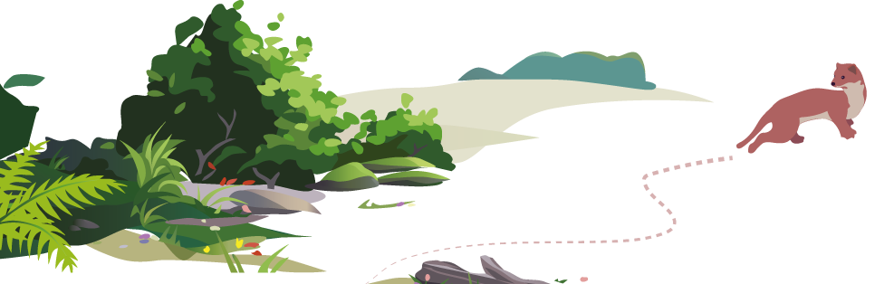
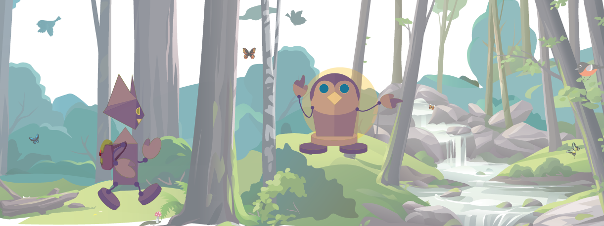
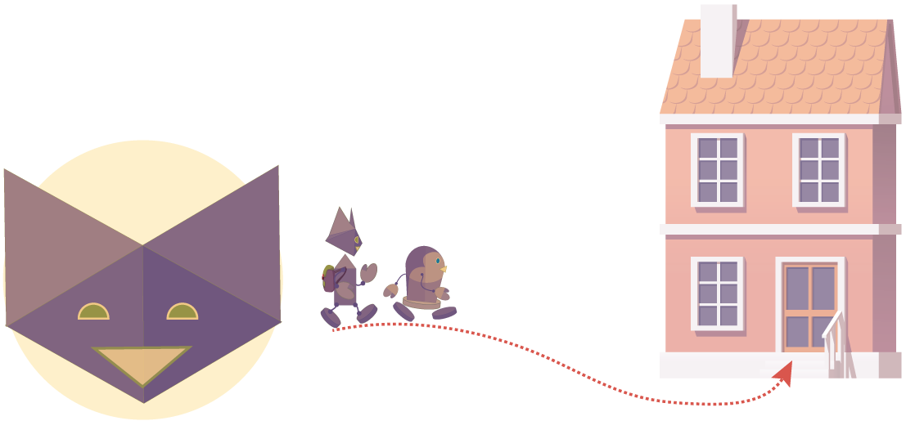

Les apprentis explorateurs
Mifa a attaché des ailes en papier à ses bras.
– C’est joli, dit Doré. mais tu ne voles pas comme un vrai papillon…

– Et tu manges quoi, si tu es un papillon ?
– Je mange des fleurs, non ? répond Mifa.

– On va regarder ce qu’ils disent dans le livre, dit Mifa.
« Le papillon se nourrit du nectar des fleurs. Il est muni d'une trompe qu'il déroule pour aspirer ce liquide sucré. »
Mifa s’imagine avec une trompe : elle n’est plus si sûre d’avoir envie de se transformer en papillon.
« Les papillons aiment aspirer le jus des fruits bien mûrs écrasés sur le sol. De plus, les mâles boivent l'eau des mares et des flaques d'eau, voire mangent des excréments, où ils puisent les sels minéraux… »
– C’est quoi les excréments ?
– Pfff… répond Mifa en riant : c’est du caca !
– Beurk !
Doré et Mifa font la grimace.
– Bon, je n’ai plus envie d’être un papillon, dit Mifa.
– Et pourquoi les papillons ne mangent-ils pas des gâteaux ? se demande Doré.
– Mmmm… Peut-être parce qu’ils n’ont pas de mains pour les cuisiner, répond Mifa.
– C’est vrai : ils ont une trompe, à la place.
– Et des ailes pour voler d’une fleur à l’autre !
– Ils sont bien équipés, dis-donc !
– C’est vrai ! Et nous aussi, puisqu’on a des mains pour cuisiner !
– Et c’est pratique : on peut manger de tout.
Quand on mange des légumes, des fruits, du poisson, etc. c’est une alimentation variée.
→ Sais-tu comment s’appellent les animaux qui, comme les humains, ont cette alimentation ?
– Peut-être que tous les animaux sont équipés pour leurs besoins…

– Comment faire pour le vérifier ? demande Doré.
– Allons explorer la nature !
– Ouiii ! s’écrie Doré.
– Une ville, c’est la nature ? demande Doré.
– Je ne crois pas, répond Mifa.
Ce sont les humains qui construisent les villes…
Parmi les milieux suivants,
sais-tu lesquels sont des milieux naturels ?
– Allons
au bois !
– Bonne idée : là-bas, c’est la nature !
Doré et Mifa arrivent dans le bois.
Un oiseau s’approche d’un arbre.
Il tient une brindille dans son bec.
L’oiseau se pose à côté de son nid.
Il y ajoute la brindille pour le réparer.
– L’oiseau construit sa maison ! chuchote Mifa.
– Il se sert de son bec pour la construire avec des brindilles : c’est malin !
Doré voit un autre oiseau.
– Et lui, que fait-il ?
– On dirait qu’il cherche quelque chose…
L’oiseau a trouvé un ver.
– Tu as vu ? dit Doré.
L’oiseau se sert de son bec pour construire sa maison et attraper sa nourriture…
Doré et Mifa entendent le bruit d’une branche qui craque.
L’oiseau s’envole aussitôt.
– Et il a des ailes pour voler, lui ! soupire Mifa.
– Et c'est tant mieux, dit Doré. Regarde !
Une fouine est à l’affût : elle aurait bien aimé attraper l’oiseau pour le manger.
– Donc les ailes des oiseaux leur servent à se déplacer dans les airs, mais aussi à échapper aux animaux qui les chassent, remarque Mifa.
Sais-tu comment on appelle les animaux comme la fouine, qui chassent d’autres animaux ?
Ces animaux mangent de la chair animale.
Ce sont donc des…
– Et la fouine : quels sont ses outils naturels ? se demande Doré.
La fouine prend peur et détale à toute vitesse.
– Elle a des pattes pour courir vite ! répond Mifa en riant.
La fouine se faufile dans un creux d’arbre.
– Comme elle est toute menue, elle peut se cacher dans un petit trou, remarque Doré.
– C’est vrai, dit Mifa : il doit y avoir d’autres animaux qui veulent la manger, aussi.
D’après toi, quel animal peut chasser la fouine pour la manger ?
Doré et Mifa aperçoivent un lapin qui mange de l’herbe.

Sais-tu comment s’appellent les animaux qui se nourrissent de végétaux ?
Quand ils essaient de s’approcher, le lapin s’enfuit et se cache dans un terrier.
– C’est la maison du lapin ? demande Doré.
– Oui, les lapins creusent des terriers avec leurs petites pattes, répond Mifa.
– Et dans son terrier, le lapin est protégé des prédateurs ! s’écrie Doré.
– Il y a une rivière là-bas, dit Doré.
– Allons voir comment font les poissons !
– On ne voit rien, se plaint Doré.

– Si ! regarde les rochers, là !
– Ah oui : ils se cachent sous les rochers, répond Doré.
– C’est peut-être leur maison à eux, dit Mifa.
– C’est vrai que construire une maison avec des nageoires, ça ne doit pas être facile !
– Non, mais pour nager dans l’eau, les nageoires sont parfaites !
Un poisson vient à la surface de l’eau pour manger un insecte qui y était posé.
– Tu as vu ?
Ce poisson a mangé un insecte, dit Doré.
– Et celui-là mange les plantes aquatiques.
– Alors les poissons aussi, sont bien adaptés à leur milieu…
– Et nous ? s’inquiète Doré.
Tu crois qu’on est bien adaptés ?
– Mais oui, répond Mifa. Nous allons rentrer à la maison sur nos jambes, qui nous servent à nous déplacer…
– Et nous allons manger un goûter ! dit Doré en courant.